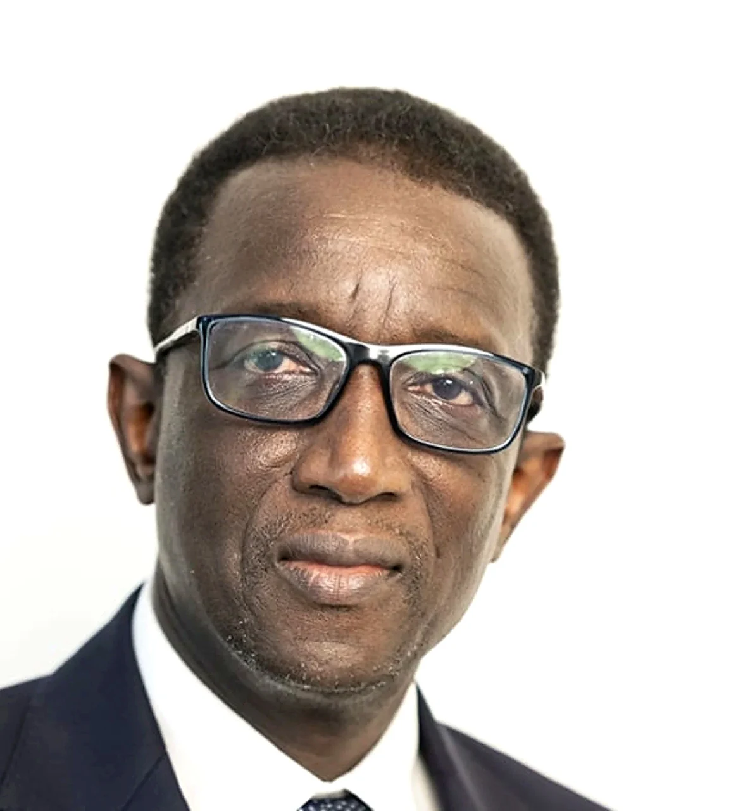

Paix.Compétence.Prospérité.
Le parti présidé par Amadou Bâ, ancien Premier ministre du Sénégal, aujourd'hui député à l'Assemblée nationale.
Une opposition démocratique et républicaine.
Lancée à Dakar le 9 septembre 2024, Nouvelle Responsabilité rassemble autour d'Amadou Bâ celles et ceux qui veulent servir le Sénégal par le dialogue, la compétence et le respect des institutions.


Amadou Bâ
Inspecteur des impôts de formation, il a dirigé l'administration fiscale avant d'être ministre de l'Économie et des Finances, puis des Affaires étrangères, et Premier ministre de 2022 à 2024. Deuxième de l'élection présidentielle de 2024, il siège depuis à l'Assemblée nationale.
- Naissance
- 17 mai 1961, Dakar
- Formation
- Université Cheikh Anta Diop · ENAM
- Fonctions
- Premier ministre (2022–2024) · Ministre des Affaires étrangères (2019–2020) · Ministre de l'Économie et des Finances (2013–2019)
- Aujourd'hui
- Député, président de Nouvelle Responsabilité
Une vie au service de l'État
Faites défiler les années ou utilisez les flèches.
Prises de parole
Discours, déclarations et communiqués, datés et reliés à leur source.
Les thèmes portés au débat
Six thèmes que Nouvelle Responsabilité a demandé d'inscrire au dialogue national de 2025.
Partout au Sénégal et dans la diaspora
Choisissez une région, ou cherchez votre département.
Diaspora
Prenez votre part de responsabilité.
Une demande d'adhésion en trois étapes, examinée par le parti avant toute carte de membre.
La plateforme derrière le site
Cinq parcours de l'équipe, utilisables dès maintenant dans la démonstration avec des données fictives.